require(Yano)Loading required package: Yano── Attaching packages ────────────────────────────────────────────── Yano 1.2 ──
✔ dplyr 1.1.4 ✔ Seurat 5.3.0
✔ ggplot2 4.0.0 This vignette uses gene, exon, and junction expression files generated from the Annotate Various Features for Alignment. While current state-of-the-art scRNA-seq methods tend to be biased towards the 3’ or 5’ ends of transcripts, it is still possible to obtain coverage information for a subset of exons. Despite the sparsity of gene and exon expression in single cells, our spatial dissimilarity test leverages the spatial distribution properties of features. This means that even features with low overall expression but strong spatial expression patterns across cells can still be highlighted. By performing a spatial dissimilarity test between exon/junction and gene expression, we can predict potential alternative splicing events.
Yano package before proceeding with the testing.Load Yano will automatically load Seurat.
require(Yano)Loading required package: Yano── Attaching packages ────────────────────────────────────────────── Yano 1.2 ──
✔ dplyr 1.1.4 ✔ Seurat 5.3.0
✔ ggplot2 4.0.0 # Read raw gene expression matrix
exp <- ReadPISA("./exp/")In this section, we will perform the standard Seurat analysis pipeline. Since the spatial dissimilarity test is not rely on cell clustering so changing the resolution or other parameters for FindClusters and RunUMAP will not impact the outcome of the spatial dissimilarity test.
# Create Seurat object and filter droplets with fewer than 1000 genes
obj <- CreateSeuratObject(exp, min.features = 1000, min.cells = 10)
# Filter low quality droplets
obj[["percent.mt"]] <- PercentageFeatureSet(obj, pattern = "^MT-")
obj <- subset(obj, nFeature_RNA < 9000 & percent.mt < 20)
# Downsampling to 2000 cells for fast testing
obj <- obj[, sample(colnames(obj),2000)]
# We run the cell clustering analysis with Seurat pipeline
obj <- NormalizeData(obj) %>% FindVariableFeatures() %>% ScaleData() %>% RunPCA(verbose=FALSE) %>% FindNeighbors(dims = 1:10, verbose=FALSE) %>% FindClusters(resolution = 0.5, verbose=FALSE) %>% RunUMAP(dims=1:10, verbose=FALSE)Normalizing layer: countsFinding variable features for layer countsCentering and scaling data matrixDimPlot(obj, label=TRUE, label.size = 5, label.box = TRUE)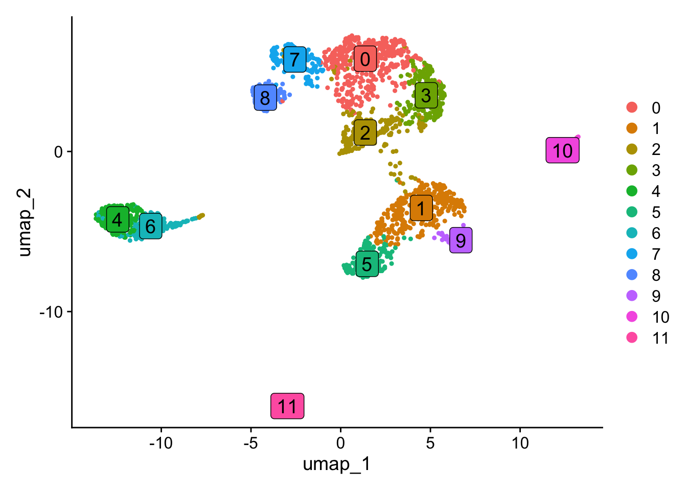
In this section, we will compare exon expression patterns with the expression patterns of their corresponding genes in a spatial context. Here, the term “spatial” refers to the organization of cells in space. In this vignette, we will use the PCA space for the analysis, but the approach can also be applied to lineage trajectories, spatial coordinates or integration space such as harmony. The spatial dissimilarity test is divided into several steps. First, we will load exon data as a new assay in the Seurat object. In the second step, we will perform a spatial autocorrelation test for all exons and select the ones that show significant autocorrelation for further analysis. Next, we will define the binding relationship between exons and their corresponding genes and run the spatial dissimilarity test. After testing, P values and adjusted P values for each exon will be provided.
# Read exon count matrix file
exon <- ReadPISA("./exon/")
# Load the exon expression to Seurat object as a new assay, make sure the exon matrix has the same cells.
obj[['exon']] <- CreateAssayObject(exon[, colnames(obj)], min.cells=20)
# Switch work assay to exon
DefaultAssay(obj) <- "exon"
# Empty info for exon features
head(obj[['exon']][[]]) %>% knitr::kable()| chr1:135141-135895/-/ENSG00000268903 |
| chr1:629640-630683/+/MTND2P28 |
| chr1:631074-632616/+/MTCO1P12 |
| chr1:632757-633438/+/MTCO2P12 |
| chr1:633696-634376/+/MTATP6P1 |
| chr1:634376-634922/+/MTCO3P12 |
obj <- ParseExonName(obj)Working on assay exon# Gene name and location are parsed from exon name
head(obj[['exon']][[]]) %>% knitr::kable()| chr | start | end | gene_name | strand | |
|---|---|---|---|---|---|
| chr1:135141-135895/-/ENSG00000268903 | chr1 | 135141 | 135895 | ENSG00000268903 | - |
| chr1:629640-630683/+/MTND2P28 | chr1 | 629640 | 630683 | MTND2P28 | + |
| chr1:631074-632616/+/MTCO1P12 | chr1 | 631074 | 632616 | MTCO1P12 | + |
| chr1:632757-633438/+/MTCO2P12 | chr1 | 632757 | 633438 | MTCO2P12 | + |
| chr1:633696-634376/+/MTATP6P1 | chr1 | 633696 | 634376 | MTATP6P1 | + |
| chr1:634376-634922/+/MTCO3P12 | chr1 | 634376 | 634922 | MTCO3P12 | + |
# Normalize the data for spatial autocorrelation test
obj <- NormalizeData(obj)
obj <- RunAutoCorr(obj)Working on assay : exonRun autocorrelation test for 117195 features.Runtime : 11.69472 secs71358 autocorrelated features.The permutation process can be computationally expensive. In the example below, I set perm=20 to perform only 20 permutations for quicker results. However, the default setting runs 100 permutations for more accurate evaluation. While it’s possible to increase the number of permutations for even more precision, it may not always be necessary. If you’re running Yano for the first time on your dataset, setting perm=20 can help you save time and provide an initial overview of the entire dataset.
obj <- RunSDT(obj, bind.name = "gene_name", bind.assay = "RNA", perm=20)Working on assay exon.Working on binding assay RNA.Use predefined weight matrix "pca_wm".Processing 71358 features.Processing 14991 binding features.Retrieve binding data from assay RNA.Use "data" layer for test features and binding features.Using 63 threads.Runtime : 42.56467 secs.# Now p values and adjusted p values have been generated
head(obj[['exon']][[]]) %>% knitr::kable()| chr | start | end | gene_name | strand | moransi.pval | moransi | autocorr.variable | gene_name.D | gene_name.t | gene_name.pval | gene_name.padj | |
|---|---|---|---|---|---|---|---|---|---|---|---|---|
| chr1:135141-135895/-/ENSG00000268903 | chr1 | 135141 | 135895 | ENSG00000268903 | - | 0.0000007 | 0.0204720 | TRUE | 0.0003070 | 5.905871 | 0.9999945 | 1 |
| chr1:629640-630683/+/MTND2P28 | chr1 | 629640 | 630683 | MTND2P28 | + | 0.0000002 | 0.0222985 | TRUE | 0.0016982 | 6.025507 | 0.9999957 | 1 |
| chr1:631074-632616/+/MTCO1P12 | chr1 | 631074 | 632616 | MTCO1P12 | + | 0.7368986 | -0.0032648 | FALSE | NA | NA | NA | NA |
| chr1:632757-633438/+/MTCO2P12 | chr1 | 632757 | 633438 | MTCO2P12 | + | 0.5386367 | -0.0009150 | FALSE | NA | NA | NA | NA |
| chr1:633696-634376/+/MTATP6P1 | chr1 | 633696 | 634376 | MTATP6P1 | + | 0.0000000 | 0.3479775 | TRUE | 0.0049830 | 9.006153 | 1.0000000 | 1 |
| chr1:634376-634922/+/MTCO3P12 | chr1 | 634376 | 634922 | MTCO3P12 | + | 0.8273457 | -0.0044489 | FALSE | NA | NA | NA | NA |
# Plot feature binding test plot
FbtPlot(obj, val = "gene_name.padj")
The chromosome names are too long and tend to overlap in the visualization. To resolve this, you can either resize the labels or remove the ‘chr’ prefix from the chromosome names. Additionally, since the Y chromosome and mitochondrial are not of particular interest to us in this analysis, they can be excluded from the visualization.
sel.chrs <- c(1:21, "X")
FbtPlot(obj, val = "gene_name.padj", remove.chr = TRUE, sel.chrs = sel.chrs)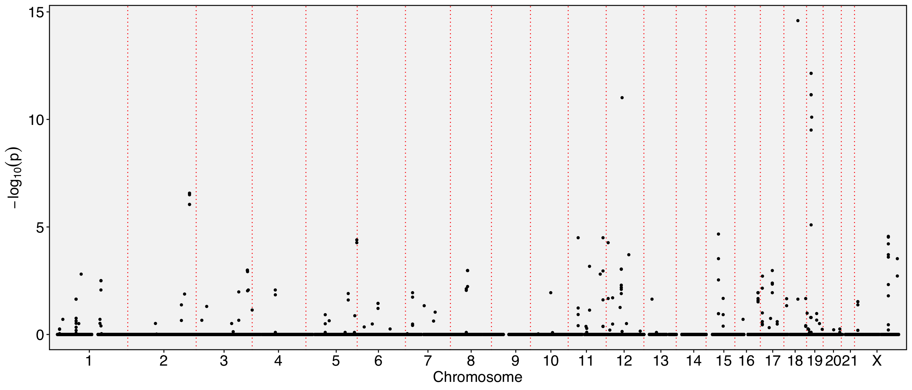
# Let's see how many exons are expressed in different spatial pattern with their genes
obj[['exon']][[]] %>% filter(gene_name.padj < 0.001) %>% knitr::kable() | chr | start | end | gene_name | strand | moransi.pval | moransi | autocorr.variable | gene_name.D | gene_name.t | gene_name.pval | gene_name.padj | |
|---|---|---|---|---|---|---|---|---|---|---|---|---|
| chr1:153990763-153991034/+/RPS27 | chr1 | 153990763 | 153991034 | RPS27 | + | 0.0e+00 | 0.1285146 | TRUE | 0.3034899 | -8.503359 | 0e+00 | 0.0000478 |
| chr1:153990914-153991034/+/RPS27 | chr1 | 153990914 | 153991034 | RPS27 | + | 0.0e+00 | 0.1266080 | TRUE | 0.2988878 | -8.170833 | 1e-07 | 0.0000823 |
| chr10:71760482-71760924/-/VSIR | chr10 | 71760482 | 71760924 | VSIR | - | 0.0e+00 | 0.0611917 | TRUE | 0.3108710 | -6.976010 | 6e-07 | 0.0006133 |
| chr11:75421727-75422280/+/RPS3 | chr11 | 75421727 | 75422280 | RPS3 | + | 0.0e+00 | 0.0532990 | TRUE | 0.2733161 | -7.821978 | 1e-07 | 0.0001438 |
| chr11:123060825-123061329/-/HSPA8 | chr11 | 123060825 | 123061329 | HSPA8 | - | 0.0e+00 | 0.1767036 | TRUE | 0.2890221 | -9.567381 | 0e+00 | 0.0000103 |
| chr11:123061588-123061833/-/HSPA8 | chr11 | 123061588 | 123061833 | HSPA8 | - | 0.0e+00 | 0.1560694 | TRUE | 0.3274981 | -11.425193 | 0e+00 | 0.0000008 |
| chr11:123061869-123062022/-/HSPA8 | chr11 | 123061869 | 123062022 | HSPA8 | - | 0.0e+00 | 0.1042242 | TRUE | 0.2801156 | -9.677870 | 0e+00 | 0.0000088 |
| chr11:113262846-113265197/+/NCAM1 | chr11 | 113262846 | 113265197 | NCAM1 | + | 0.0e+00 | 0.3832654 | TRUE | 0.3274877 | -7.324619 | 3e-07 | 0.0003273 |
| chr12:53303034-53306861/+/ENSG00000288663 | chr12 | 53303034 | 53306861 | ENSG00000288663 | + | 0.0e+00 | 0.0305111 | TRUE | 0.3059500 | -8.853177 | 0e+00 | 0.0000274 |
| chr12:53306680-53306861/+/ENSG00000288663 | chr12 | 53306680 | 53306861 | ENSG00000288663 | + | 0.0e+00 | 0.0291947 | TRUE | 0.3073149 | -7.848144 | 1e-07 | 0.0001393 |
| chr12:53306966-53307171/+/ENSG00000288663 | chr12 | 53306966 | 53307171 | ENSG00000288663 | + | 0.0e+00 | 0.0240766 | TRUE | 0.2937248 | -10.010381 | 0e+00 | 0.0000054 |
| chr12:53306966-53307158/+/ENSG00000288663 | chr12 | 53306966 | 53307158 | ENSG00000288663 | + | 0.0e+00 | 0.0237021 | TRUE | 0.2942330 | -9.694383 | 0e+00 | 0.0000088 |
| chr12:53306966-53307122/+/ENSG00000288663 | chr12 | 53306966 | 53307122 | ENSG00000288663 | + | 2.2e-06 | 0.0200726 | TRUE | 0.2765816 | -8.118423 | 1e-07 | 0.0000873 |
| chr12:53306966-53307174/+/ENSG00000288663 | chr12 | 53306966 | 53307174 | ENSG00000288663 | + | 0.0e+00 | 0.0241618 | TRUE | 0.2948391 | -10.028097 | 0e+00 | 0.0000054 |
| chr12:56161387-56161465/+/MYL6 | chr12 | 56161387 | 56161465 | MYL6 | + | 0.0e+00 | 0.2502209 | TRUE | 0.6833002 | -17.879907 | 0e+00 | 0.0000000 |
| chr11:65499689-65499982/+/MALAT1 | chr11 | 65499689 | 65499982 | MALAT1 | + | 0.0e+00 | 0.1101153 | TRUE | 0.1624741 | -9.119171 | 0e+00 | 0.0000184 |
| chr11:65499710-65499862/+/MALAT1 | chr11 | 65499710 | 65499862 | MALAT1 | + | 0.0e+00 | 0.0950845 | TRUE | 0.1854373 | -7.946390 | 1e-07 | 0.0001180 |
| chr11:65499986-65500778/+/MALAT1 | chr11 | 65499986 | 65500778 | MALAT1 | + | 0.0e+00 | 0.1387638 | TRUE | 0.1258170 | -7.682511 | 2e-07 | 0.0001809 |
| chr11:65500223-65500398/+/MALAT1 | chr11 | 65500223 | 65500398 | MALAT1 | + | 0.0e+00 | 0.1038967 | TRUE | 0.1564067 | -8.290847 | 0e+00 | 0.0000687 |
| chr11:65500390-65501202/+/MALAT1 | chr11 | 65500390 | 65501202 | MALAT1 | + | 0.0e+00 | 0.1189313 | TRUE | 0.1659801 | -9.171462 | 0e+00 | 0.0000173 |
| chr11:65503121-65505449/+/MALAT1 | chr11 | 65503121 | 65505449 | MALAT1 | + | 0.0e+00 | 0.1415113 | TRUE | 0.1468472 | -11.376918 | 0e+00 | 0.0000008 |
| chr11:65501960-65502393/+/MALAT1 | chr11 | 65501960 | 65502393 | MALAT1 | + | 0.0e+00 | 0.0691474 | TRUE | 0.1655690 | -7.743927 | 1e-07 | 0.0001638 |
| chr11:65502290-65502582/+/MALAT1 | chr11 | 65502290 | 65502582 | MALAT1 | + | 0.0e+00 | 0.0551836 | TRUE | 0.1759176 | -7.504812 | 2e-07 | 0.0002419 |
| chr11:65503121-65504206/+/MALAT1 | chr11 | 65503121 | 65504206 | MALAT1 | + | 0.0e+00 | 0.0958401 | TRUE | 0.1307980 | -8.969271 | 0e+00 | 0.0000234 |
| chr11:65502801-65505019/+/MALAT1 | chr11 | 65502801 | 65505019 | MALAT1 | + | 0.0e+00 | 0.1498731 | TRUE | 0.1344385 | -10.374489 | 0e+00 | 0.0000035 |
| chr11:65502809-65505278/+/MALAT1 | chr11 | 65502809 | 65505278 | MALAT1 | + | 0.0e+00 | 0.1507829 | TRUE | 0.1384675 | -10.352485 | 0e+00 | 0.0000035 |
| chr11:65503117-65506468/+/MALAT1 | chr11 | 65503117 | 65506468 | MALAT1 | + | 0.0e+00 | 0.1577196 | TRUE | 0.1554185 | -12.737675 | 0e+00 | 0.0000001 |
| chr11:65503117-65503799/+/MALAT1 | chr11 | 65503117 | 65503799 | MALAT1 | + | 0.0e+00 | 0.0892865 | TRUE | 0.1340324 | -9.516143 | 0e+00 | 0.0000109 |
| chr11:65503117-65503630/+/MALAT1 | chr11 | 65503117 | 65503630 | MALAT1 | + | 0.0e+00 | 0.0830460 | TRUE | 0.1427080 | -7.586680 | 2e-07 | 0.0002101 |
| chr11:65503117-65504206/+/MALAT1 | chr11 | 65503117 | 65504206 | MALAT1 | + | 0.0e+00 | 0.0962510 | TRUE | 0.1313456 | -8.878513 | 0e+00 | 0.0000267 |
| chr11:65503121-65503614/+/MALAT1 | chr11 | 65503121 | 65503614 | MALAT1 | + | 0.0e+00 | 0.0823249 | TRUE | 0.1463377 | -8.826009 | 0e+00 | 0.0000281 |
| chr11:65504326-65505452/+/MALAT1 | chr11 | 65504326 | 65505452 | MALAT1 | + | 0.0e+00 | 0.1431787 | TRUE | 0.2403004 | -13.455158 | 0e+00 | 0.0000001 |
| chr11:65504326-65505016/+/MALAT1 | chr11 | 65504326 | 65505016 | MALAT1 | + | 0.0e+00 | 0.1294356 | TRUE | 0.2348493 | -13.710463 | 0e+00 | 0.0000001 |
| chr11:65504326-65506110/+/MALAT1 | chr11 | 65504326 | 65506110 | MALAT1 | + | 0.0e+00 | 0.1618736 | TRUE | 0.2461576 | -16.233065 | 0e+00 | 0.0000000 |
| chr11:65504326-65505453/+/MALAT1 | chr11 | 65504326 | 65505453 | MALAT1 | + | 0.0e+00 | 0.1437087 | TRUE | 0.2407022 | -13.441963 | 0e+00 | 0.0000001 |
| chr11:65504326-65505278/+/MALAT1 | chr11 | 65504326 | 65505278 | MALAT1 | + | 0.0e+00 | 0.1406576 | TRUE | 0.2386220 | -13.405519 | 0e+00 | 0.0000001 |
| chr11:65504326-65504879/+/MALAT1 | chr11 | 65504326 | 65504879 | MALAT1 | + | 0.0e+00 | 0.1195846 | TRUE | 0.2339543 | -11.736142 | 0e+00 | 0.0000005 |
| chr11:65504326-65505450/+/MALAT1 | chr11 | 65504326 | 65505450 | MALAT1 | + | 0.0e+00 | 0.1435260 | TRUE | 0.2406878 | -13.487311 | 0e+00 | 0.0000001 |
| chr11:65504308-65505453/+/MALAT1 | chr11 | 65504308 | 65505453 | MALAT1 | + | 0.0e+00 | 0.1456761 | TRUE | 0.2412992 | -13.179045 | 0e+00 | 0.0000001 |
| chr11:65504658-65505662/+/MALAT1 | chr11 | 65504658 | 65505662 | MALAT1 | + | 0.0e+00 | 0.1205884 | TRUE | 0.2367286 | -12.178715 | 0e+00 | 0.0000003 |
| chr11:65504658-65506469/+/MALAT1 | chr11 | 65504658 | 65506469 | MALAT1 | + | 0.0e+00 | 0.1580652 | TRUE | 0.2672221 | -19.125353 | 0e+00 | 0.0000000 |
| chr11:65499091-65499305/+/MALAT1 | chr11 | 65499091 | 65499305 | MALAT1 | + | 0.0e+00 | 0.1283603 | TRUE | 0.0971274 | -7.344413 | 3e-07 | 0.0003198 |
| chr15:43801518-43801569/+/SERF2 | chr15 | 43801518 | 43801569 | SERF2 | + | 0.0e+00 | 0.0854215 | TRUE | 0.2911935 | -7.201041 | 4e-07 | 0.0004045 |
| chr15:43801711-43804427/+/SERF2 | chr15 | 43801711 | 43804427 | SERF2 | + | 0.0e+00 | 0.1013124 | TRUE | 0.3546075 | -13.570054 | 0e+00 | 0.0000001 |
| chr18:49481681-49482410/-/RPL17-C18orf32 | chr18 | 49481681 | 49482410 | RPL17-C18orf32 | - | 0.0e+00 | 0.2714342 | TRUE | 0.6833014 | -36.036629 | 0e+00 | 0.0000000 |
| chr18:77065774-77066385/-/MBP | chr18 | 77065774 | 77066385 | MBP | - | 0.0e+00 | 0.0367264 | TRUE | 0.3063810 | -6.792519 | 9e-07 | 0.0008738 |
| chr19:16095264-16095357/+/TPM4 | chr19 | 16095264 | 16095357 | TPM4 | + | 0.0e+00 | 0.1883662 | TRUE | 0.5323637 | -14.956982 | 0e+00 | 0.0000000 |
| chr19:16095264-16096744/+/TPM4 | chr19 | 16095264 | 16096744 | TPM4 | + | 0.0e+00 | 0.2529661 | TRUE | 0.6015291 | -19.283448 | 0e+00 | 0.0000000 |
| chr19:16095264-16095454/+/TPM4 | chr19 | 16095264 | 16095454 | TPM4 | + | 0.0e+00 | 0.2415151 | TRUE | 0.5936286 | -17.821985 | 0e+00 | 0.0000000 |
| chr19:16095264-16095893/+/TPM4 | chr19 | 16095264 | 16095893 | TPM4 | + | 0.0e+00 | 0.2603446 | TRUE | 0.6080173 | -19.128592 | 0e+00 | 0.0000000 |
| chr19:16095264-16095591/+/TPM4 | chr19 | 16095264 | 16095591 | TPM4 | + | 0.0e+00 | 0.2608666 | TRUE | 0.6095623 | -19.109339 | 0e+00 | 0.0000000 |
| chr19:16095264-16095496/+/TPM4 | chr19 | 16095264 | 16095496 | TPM4 | + | 0.0e+00 | 0.2597696 | TRUE | 0.6095596 | -18.669919 | 0e+00 | 0.0000000 |
| chr19:18169087-18170494/+/ENSG00000268173 | chr19 | 18169087 | 18170494 | ENSG00000268173 | + | 0.0e+00 | 0.0605448 | TRUE | 0.5149392 | -19.507340 | 0e+00 | 0.0000000 |
| chr2:218344808-218346793/+/PNKD | chr2 | 218344808 | 218346793 | PNKD | + | 0.0e+00 | 0.0933749 | TRUE | 0.4928355 | -13.412134 | 0e+00 | 0.0000001 |
| chr2:218344808-218346784/+/PNKD | chr2 | 218344808 | 218346784 | PNKD | + | 0.0e+00 | 0.0938899 | TRUE | 0.4899804 | -13.615581 | 0e+00 | 0.0000001 |
| chr2:218344808-218346756/+/PNKD | chr2 | 218344808 | 218346756 | PNKD | + | 0.0e+00 | 0.0950468 | TRUE | 0.4918331 | -13.668647 | 0e+00 | 0.0000001 |
| chr2:218344808-218346791/+/PNKD | chr2 | 218344808 | 218346791 | PNKD | + | 0.0e+00 | 0.0933749 | TRUE | 0.4928355 | -13.412134 | 0e+00 | 0.0000001 |
| chr2:218344808-218346771/+/PNKD | chr2 | 218344808 | 218346771 | PNKD | + | 0.0e+00 | 0.0942285 | TRUE | 0.4915395 | -13.723775 | 0e+00 | 0.0000001 |
| chr22:21769040-21769320/-/MAPK1 | chr22 | 21769040 | 21769320 | MAPK1 | - | 0.0e+00 | 0.0317874 | TRUE | 0.2990559 | -7.639386 | 2e-07 | 0.0001931 |
| chr3:181175514-181176513/+/SOX2-OT | chr3 | 181175514 | 181176513 | SOX2-OT | + | 0.0e+00 | 0.1684237 | TRUE | 0.3290283 | -9.276561 | 0e+00 | 0.0000151 |
| chr3:181175514-181176523/+/SOX2-OT | chr3 | 181175514 | 181176523 | SOX2-OT | + | 0.0e+00 | 0.1684237 | TRUE | 0.3290283 | -9.276561 | 0e+00 | 0.0000151 |
| chr3:181563720-181566165/+/SOX2-OT | chr3 | 181563720 | 181566165 | SOX2-OT | + | 0.0e+00 | 0.1629623 | TRUE | 0.3461776 | -7.299107 | 3e-07 | 0.0003388 |
| chr3:181175514-181176524/+/SOX2-OT | chr3 | 181175514 | 181176524 | SOX2-OT | + | 0.0e+00 | 0.1679889 | TRUE | 0.3280395 | -9.259637 | 0e+00 | 0.0000152 |
| chr3:197953488-197953660/+/RPL35A | chr3 | 197953488 | 197953660 | RPL35A | + | 0.0e+00 | 0.0444161 | TRUE | 0.2631618 | -10.051282 | 0e+00 | 0.0000054 |
| chr8:60620674-60620895/+/RAB2A | chr8 | 60620674 | 60620895 | RAB2A | + | 0.0e+00 | 0.0342212 | TRUE | 0.2761197 | -7.191168 | 4e-07 | 0.0004064 |
| chrX:119583127-119584101/+/UBE2A | chrX | 119583127 | 119584101 | UBE2A | + | 0.0e+00 | 0.0445352 | TRUE | 0.2570516 | -7.438799 | 2e-07 | 0.0002705 |
| chrX:119583127-119583417/+/UBE2A | chrX | 119583127 | 119583417 | UBE2A | + | 0.0e+00 | 0.0554856 | TRUE | 0.2830768 | -9.366904 | 0e+00 | 0.0000137 |
| chrX:119583127-119583621/+/UBE2A | chrX | 119583127 | 119583621 | UBE2A | + | 0.0e+00 | 0.0531503 | TRUE | 0.2764695 | -8.804443 | 0e+00 | 0.0000286 |
| chrX:119583127-119583347/+/UBE2A | chrX | 119583127 | 119583347 | UBE2A | + | 0.0e+00 | 0.0535743 | TRUE | 0.2751442 | -8.159944 | 1e-07 | 0.0000824 |
| chrX:151403631-151403740/+/VMA21 | chrX | 151403631 | 151403740 | VMA21 | + | 0.0e+00 | 0.0446442 | TRUE | 0.2986812 | -8.215589 | 1e-07 | 0.0000773 |
| chrX:151404916-151405157/+/VMA21 | chrX | 151404916 | 151405157 | VMA21 | + | 0.0e+00 | 0.0831821 | TRUE | 0.3722250 | -11.251499 | 0e+00 | 0.0000009 |
# Random select a gene and its exons and visulize with FeaturePlot.
FeaturePlot(obj, features = c("chr15:43801711-43804427/+/SERF2", "SERF2"), ncol=2)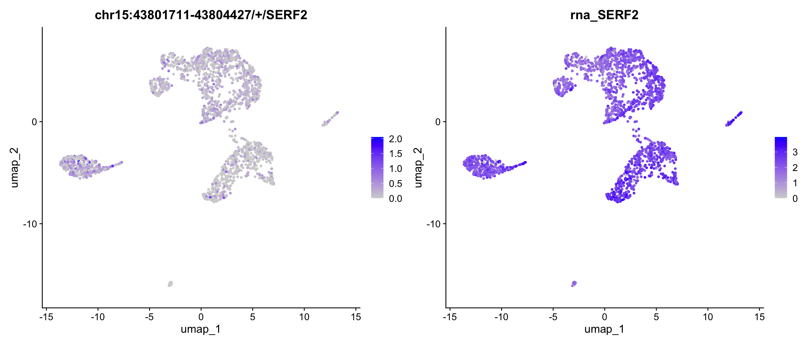
# The default color and parameters perhaps not easily to tell the difference between exon and its binding gene expression. Let's change the scaled colors and enlarge point size and order by expression.
require(RColorBrewer)Loading required package: RColorBrewerFeaturePlot(obj, features = c("chr15:43801711-43804427/+/SERF2", "SERF2"), ncol=2, order = TRUE, pt.size=1) & scale_colour_gradientn(colours = rev(brewer.pal(n = 11, name = "RdBu")))Scale for colour is already present.
Adding another scale for colour, which will replace the existing scale.Scale for colour is already present.
Adding another scale for colour, which will replace the existing scale.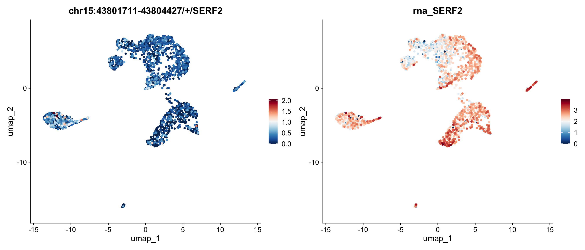
We can also map the ratio of exon expression to gene expression on the UMAP. The RatioPlot function is designed for this purpose. As observed, the gene SERF2 is relatively low expressed in some cell groups, while the ratio of the exon chr15:43801711-43804427/+/SERF2 is higher in these groups.
RatioPlot(obj, features = c("chr15:43801711-43804427/+/SERF2"), assay = 'exon', bind.assay = 'RNA', bind.name = "gene_name", order = TRUE, pt.size=1) 
In the feature plot and ratio plot above, the exon appears to lack a strong expression pattern across cell groups, whereas the gene SERF2 seems to be highly expressed in many groups, but with few exception. This inconsistent expression pattern between the exon and its corresponding gene may suggest differential exon usage. To explore the coverage details of both the exon and the gene body, we will generate a track plot next.
In our package, retrieving gene locations requires loading a GTF file instead of relying on current Bioconductor databases, such as org.Hs.eg.db. This is due to the varying versions of gene annotations provided by different institutes, which can introduce inconsistencies. To avoid potential bias during preprocessing and postprocessing, we strongly recommend using the same GTF file consistently throughout your project. The Yano package includes the gtf2db function, which enables you to load a GTF file into memory for further analysis.
gtf <- gtf2db("./gencode.v44.annotation.gtf.gz")[2026-01-13 14:50:59] GTF loading..
[2026-01-13 14:51:43] Load 62700 genes.
[2026-01-13 14:51:43] Load time : 44.049 secA track plot is used to study the read coverage per cell group. In the track plot shown below, the cell group is specified by the cell.group parameter. Unlike IGV, where read depth is used, we use UMI depth in this plot. The cell barcode tag and UMI tag are predefined as “CB” and “UB” with parameter cell.tag and umi.tag. For each cell group, the UMI depth has been normalized by the number of cells in that group. This means that the depth at each location can be interpreted as the mean UMI depth per cell for the group. As a result, the tracks are directly comparable across different cell groups. If cell.group is not set, the track plot will generate the raw UMI depth per location.
TrackPlot(bamfile = "Parent_SC3v3_Human_Glioblastoma_possorted_genome_bam.bam", gtf = gtf, gene = "SERF2", cell.group = Idents(obj), highlights = c(43801711,43804427) )Warning: Using `size` aesthetic for lines was deprecated in ggplot2 3.4.0.
ℹ Please use `linewidth` instead.
ℹ The deprecated feature was likely used in the Yano package.
Please report the issue to the authors.
In the track plot, we can easily observe that an exon around position 43,794,000 dominates the expression of the SERF2 gene and is highly expressed in many cell groups. However, the exon ‘chr15:43801711-43804427/+/SERF2’ (highlighted) shows low expression and is not visible in the track plot. To visualize low-expressed exons, we can set the max.depth parameter to 2, which caps the UMI depth at 2. And many genes in the region, we set display.genes to SERF2 only. This adjustment allows the low-expressed exons and their related transcripts to be more clearly represented in the plot. In this case, we can found the the highlighed exon shows different expressed pattern with the gene SERF2.
TrackPlot(bamfile = "Parent_SC3v3_Human_Glioblastoma_possorted_genome_bam.bam", gtf = gtf, gene = "SERF2", cell.group = Idents(obj), highlights = c(43801711,43804427), max.depth = 2, display.genes = "SERF2")
In addition to exon expression, junction expression can provide insights into different expression patterns across transcripts, offering a complementary perspective. Junction expression refers to the UMI counts of reads that span more than one exon. It’s important to note that junctions are named similarly to exons, but the start and end positions are different. The start of the junction corresponds to the end of the previous exon, while the end of the junction represents the start of the next exon.
junction <- ReadPISA("./junction/")
obj[['junction']] <- CreateAssayObject(junction[, colnames(obj)], min.cells=20)
DefaultAssay(obj) <- "junction"
obj <- NormalizeData(obj)
# select spatial autocorrelated junctions
obj <- RunAutoCorr(obj)Working on assay : junctionRun autocorrelation test for 14754 features.Runtime : 1.467701 secs7505 autocorrelated features.# Parse the gene name and coordinates from junction names
obj <- ParseExonName(obj)Working on assay junction# perform dissimilarity test between junctions and their binding genes
obj <- RunSDT(obj, bind.name = "gene_name", bind.assay = "RNA", perm=20)Working on assay junction.Working on binding assay RNA.Use predefined weight matrix "pca_wm".Processing 7505 features.Processing 3753 binding features.Retrieve binding data from assay RNA.Use "data" layer for test features and binding features.Using 63 threads.Runtime : 5.708303 secs.FbtPlot(obj, val="gene_name.padj", remove.chr=TRUE, sel.chrs = sel.chrs)
obj[['junction']][[]] %>% filter(gene_name.padj<1e-5) moransi.pval moransi autocorr.variable chr
chr12:56160320-56161387/+/MYL6 0.000000e+00 0.1953176 TRUE chr12
chr15:43801569-43801711/+/SERF2 1.797608e-66 0.0766387 TRUE chr15
chr19:16093753-16095264/+/TPM4 0.000000e+00 0.1823960 TRUE chr19
start end gene_name strand gene_name.D
chr12:56160320-56161387/+/MYL6 56160320 56161387 MYL6 + 0.6477157
chr15:43801569-43801711/+/SERF2 43801569 43801711 SERF2 + 0.3129913
chr19:16093753-16095264/+/TPM4 16093753 16095264 TPM4 + 0.5164832
gene_name.t gene_name.pval gene_name.padj
chr12:56160320-56161387/+/MYL6 -13.412033 1.936218e-11 7.265658e-08
chr15:43801569-43801711/+/SERF2 -9.996156 2.647860e-09 6.624064e-06
chr19:16093753-16095264/+/TPM4 -16.044855 8.370662e-13 6.282182e-09# Because both exon and junction are compared with gene, so it's reasonable to combine these two assays in one plot
FbtPlot(obj, val="gene_name.padj", assay = c("exon", "junction"), col.by = "assay", shape.by = "assay", pt.size = 2, remove.chr = TRUE, sel.chrs = sel.chrs, cols = c("red", "blue"))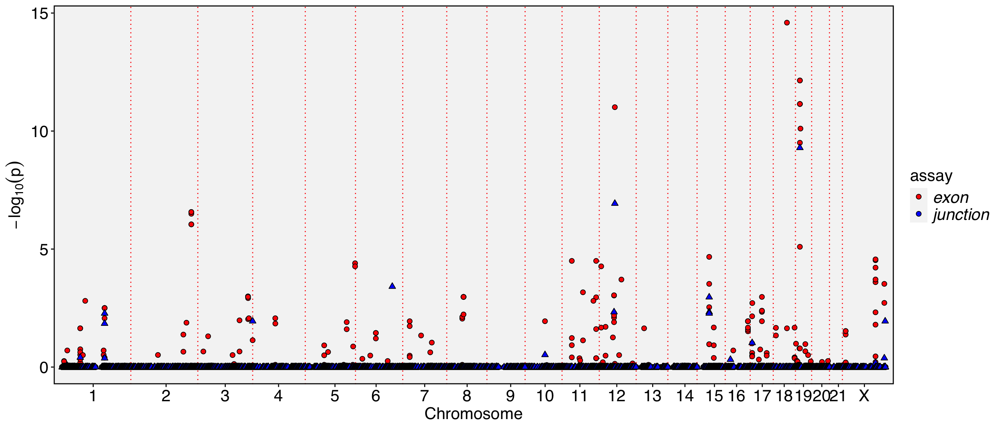
# We can find there is an exon and a junction at chromosome 12 with very low p value (<1e-8), let's see which gene they are located
obj[['exon']][[]] %>% filter(chr == "chr12" & gene_name.pval < 1e-8) %>% knitr::kable()| chr | start | end | gene_name | strand | moransi.pval | moransi | autocorr.variable | gene_name.D | gene_name.t | gene_name.pval | gene_name.padj | |
|---|---|---|---|---|---|---|---|---|---|---|---|---|
| chr12:53306966-53307171/+/ENSG00000288663 | chr12 | 53306966 | 53307171 | ENSG00000288663 | + | 0 | 0.0240766 | TRUE | 0.2937248 | -10.010381 | 0 | 5.4e-06 |
| chr12:53306966-53307158/+/ENSG00000288663 | chr12 | 53306966 | 53307158 | ENSG00000288663 | + | 0 | 0.0237021 | TRUE | 0.2942330 | -9.694383 | 0 | 8.8e-06 |
| chr12:53306966-53307174/+/ENSG00000288663 | chr12 | 53306966 | 53307174 | ENSG00000288663 | + | 0 | 0.0241618 | TRUE | 0.2948391 | -10.028097 | 0 | 5.4e-06 |
| chr12:56161387-56161465/+/MYL6 | chr12 | 56161387 | 56161465 | MYL6 | + | 0 | 0.2502209 | TRUE | 0.6833002 | -17.879907 | 0 | 0.0e+00 |
obj[['junction']][[]] %>% filter(chr == "chr12" & gene_name.pval < 1e-8) %>% knitr::kable()| moransi.pval | moransi | autocorr.variable | chr | start | end | gene_name | strand | gene_name.D | gene_name.t | gene_name.pval | gene_name.padj | |
|---|---|---|---|---|---|---|---|---|---|---|---|---|
| chr12:56160320-56161387/+/MYL6 | 0 | 0.1953176 | TRUE | chr12 | 56160320 | 56161387 | MYL6 | + | 0.6477157 | -13.41203 | 0 | 1e-07 |
FeaturePlot(obj, features = c("chr12:56161387-56161465/+/MYL6","chr12:56160320-56161387/+/MYL6", "MYL6"), order = TRUE, pt.size = 2, ncol=3) & scale_colour_gradientn(colours = rev(brewer.pal(n = 11, name = "RdBu")))Scale for colour is already present.
Adding another scale for colour, which will replace the existing scale.Scale for colour is already present.
Adding another scale for colour, which will replace the existing scale.
Scale for colour is already present.
Adding another scale for colour, which will replace the existing scale.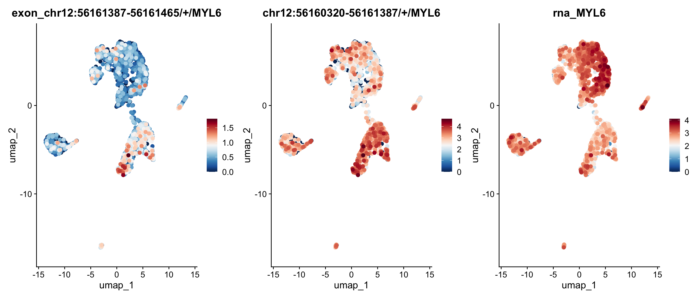
# We could also plot the expression ratio of these exons or junctions on umap
p1 <- RatioPlot(obj, assay = "exon", bind.assay = "RNA", bind.name = "gene_name", features = "chr12:56161387-56161465/+/MYL6")
p2 <- RatioPlot(obj, assay = "exon", bind.assay = "RNA", bind.name = "gene_name", features = "chr12:56160626-56160670/+/MYL6")
p3 <- RatioPlot(obj, assay = "junction", bind.assay = "RNA", bind.name = "gene_name", features = "chr12:56160320-56161387/+/MYL6")
cowplot::plot_grid(p1,p2,p3, ncol=3)
We then visualize the track plot for this gene, including junction reads by setting junc=TRUE. The height of the splice paths in the plot represents the expression level of each junction within the specified cell group.
TrackPlot(bamfile = "Parent_SC3v3_Human_Glioblastoma_possorted_genome_bam.bam", gtf = gtf, gene = "MYL6", cell.group = Idents(obj), junc = TRUE, highlights = list(c(56160320,56161387),c(56161387,56161465)))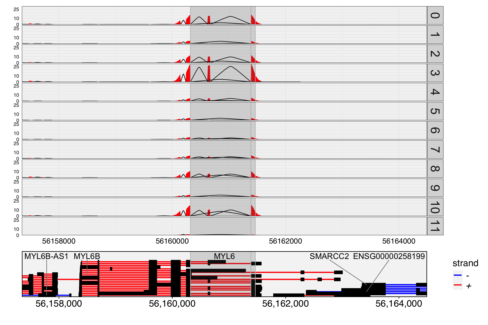
You might be wondering why the exon chr12:56161387-56161465/+/MYL6 appears highly expressed in cell group 3 in the track plot, where the overlapping peak is clearly higher than in other groups, but its expression level in the feature plot is not as high as expected.
This discrepancy arises because the exon is overlapping with other exons from different transcripts. We only count reads that are fully contained within the exon as part of the exon’s expression. Therefore, reads that partially overlap with this exon are not included in the count.
In contrast, the overlapping exon chr12:56161387-56161575/+/MYL6 shows higher expression in group 3 compared to other groups. It’s important to note that if a read is fully contained within two or more overlapping exons, PISA will count it for all relevant exons. Check PISA’s manual for details.
p1 <- DimPlot(obj, label=TRUE, label.size = 5, label.box = TRUE)
p2 <- FeaturePlot(obj, features = c("chr12:56161387-56161575/+/MYL6"), order = TRUE, pt.size = 1) & scale_colour_gradientn(colours = rev(brewer.pal(n = 11, name = "RdBu")))Warning: Could not find chr12:56161387-56161575/+/MYL6 in the default search
locations, found in 'exon' assay insteadScale for colour is already present.
Adding another scale for colour, which will replace the existing scale.p1 + p2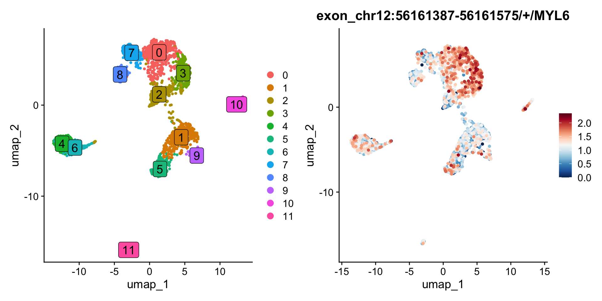
The spatial dissimilarity test method prioritizes alternatively spliced exons and junctions across all cells but does not identify which specific cell groups exhibit these splicing events. To address this, let’s manually extract the scaled expression data for the selected alternatively spliced exons and their corresponding genes, then perform a co-clustering analysis. A comprehensive heatmap will be generated using the ComplexHeatmap package, providing a visual representation of the exon and gene distribution across cell groups.
obj[['exon']][[]] %>% filter(gene_name.padj<0.001) %>% rownames -> exons
obj[['exon']][[]] %>% filter(gene_name.padj<0.001) %>% pull(gene_name) -> bind.genes
DefaultAssay(obj) <- "RNA"
obj <- ScaleData(obj, features = unique(bind.genes))
DefaultAssay(obj) <- "exon"
obj <- ScaleData(obj, features = exons)
dat1 <- GetAssayData(obj, assay = 'exon', layer = 'scale.data')
dat2 <- GetAssayData(obj, assay = 'RNA', layer = 'scale.data')
idents <- sort(Idents(obj))
order.cells <- names(idents)
dat2 <- dat2[bind.genes,]
rownames(dat2) <- exons
dat <- cbind(dat1, dat2)
require(ComplexHeatmap)
d <- dist(dat)
hc <- hclust(d)
idx <- hc$labels[hc$order]
ha <- HeatmapAnnotation(group=idents, border = TRUE)
ht1 <- Heatmap(dat1[idx, order.cells], cluster_rows = FALSE, cluster_columns = FALSE, show_column_names = FALSE, border = TRUE, top_annotation = ha, name = "exon", column_title = "exon")
ht2 <- Heatmap(dat2[idx, order.cells], cluster_rows = FALSE, cluster_columns = FALSE, show_column_names = FALSE, border = TRUE, top_annotation = ha, name = "gene", column_title = "gene", row_names_max_width = max_text_width(rownames(dat2), gp = gpar(fontsize = 12)))
ht <- ht1 + ht2
draw(ht, heatmap_legend_side = "left", annotation_legend_side = "left")
In the previous sections, we conducted a spatial dissimilarity test between exon/junction expression and gene expression. However, binding features are not always limited to genes; they can also correspond to other types of features. In this section, we perform a test between exon expression and reads that skip this exon (exclude assay). This approach is similar to the Percent Spliced In (PSI) method, which is widely used to analyze alternative splicing in both bulk and single-cell RNA-seq data. The PSI is calculated as: PSI = exon reads / (exon reads + reads skipping this exon).
# The reads that skip exons are annotated using the `-psi` option in PISA anno, and these counts are stored in the `exclude` directory. We then load these excluded counts into a new assay.
exclude <- ReadPISA("exclude/")
obj[['exclude']] <- CreateAssayObject(exclude[,colnames(obj)], min.cells = 10)
DefaultAssay(obj) <- "exclude"
# Normalize counts for exon-excluded reads
obj <- NormalizeData(obj)
# Then we switch to exon assay
DefaultAssay(obj) <- "exon"
# Because the feature names in the exclude assay are exactly the same as those in the exon assay, they represent the reads that skip each corresponding exon. Therefore, we set up the binding feature using the exon name itself.
obj[['exon']][['exon_name']] <- rownames(obj)
obj[['exon']][['exon_name']] %>% head exon_name
chr1:135141-135895/-/ENSG00000268903 chr1:135141-135895/-/ENSG00000268903
chr1:629640-630683/+/MTND2P28 chr1:629640-630683/+/MTND2P28
chr1:631074-632616/+/MTCO1P12 chr1:631074-632616/+/MTCO1P12
chr1:632757-633438/+/MTCO2P12 chr1:632757-633438/+/MTCO2P12
chr1:633696-634376/+/MTATP6P1 chr1:633696-634376/+/MTATP6P1
chr1:634376-634922/+/MTCO3P12 chr1:634376-634922/+/MTCO3P12# Then we perform spatial dissimilarity test between exon and exclude, mode 1
obj <- RunSDT(obj, bind.name = "exon_name", bind.assay = "exclude")
# Swith to exon exluded assay
DefaultAssay(obj) <- "exclude"
obj <- RunAutoCorr(obj)
obj <- ParseExonName(obj)
obj[['exclude']][['exon_name']] <- rownames(obj)
obj <- RunSDT(obj, bind.name = "exon_name", bind.assay = "exon")
FbtPlot(obj, val = "exon_name.padj", remove.chr = TRUE, assay = c("exclude", "exon"), shape.by = "assay", col.by = "assay", cols = c("yellow", "green"), pt.size = 2)
# Let's how many exons can be prioritized by both exon assay and exclude assay
obj[['exclude']][[]] %>% filter(exon_name.padj<1e-5) %>% rownames -> sel1
obj[['exon']][[]] %>% filter(exon_name.padj<1e-5) %>% rownames -> sel2
intersect(sel1,sel2) [1] "chr1:19342752-19342864/-/CAPZB" "chr1:153990914-153991034/+/RPS27"
[3] "chr10:7806974-7807010/+/ATP5F1C" "chr10:128047570-128047683/+/PTPRE"
[5] "chr12:56160626-56160670/+/MYL6" "chr12:56160626-56160945/+/MYL6"
[7] "chr14:75279237-75279531/+/FOS" "chr15:29822002-29822468/-/TJP1"
[9] "chr15:29822002-29822503/-/TJP1" "chr15:29822002-29822502/-/TJP1"
[11] "chr19:16095264-16095357/+/TPM4" "chr19:16095264-16095454/+/TPM4"
[13] "chr19:16095264-16095496/+/TPM4" "chr19:16095264-16095893/+/TPM4"
[15] "chr19:16095264-16096744/+/TPM4" "chr19:16095264-16095591/+/TPM4"
[17] "chr2:197490527-197490664/-/HSPD1" "chr20:37238402-37238449/+/RPN2"
[19] "chr3:197953488-197953660/+/RPL35A" "chr4:118278944-118279137/+/SNHG8"
[21] "chr4:118278934-118279137/+/SNHG8" "chr4:118279107-118279137/+/SNHG8"
[23] "chr4:118278966-118279137/+/SNHG8" "chr5:83519349-83522309/+/VCAN"
[25] "chr6:85677795-85677875/-/SNHG5" "chr6:85677795-85677868/-/SNHG5"
[27] "chr6:85677791-85677875/-/SNHG5" "chr6:85677795-85677899/-/SNHG5"
[29] "chr9:35684732-35684807/-/TPM2" "chr9:35684732-35684802/-/TPM2"
[31] "chrX:154400464-154400626/+/RPL10" DefaultAssay(obj) <- "exclude"
p1 <- FeaturePlot(obj, features = c("chr19:16095264-16095357/+/TPM4"),order = TRUE)
DefaultAssay(obj) <- "exon"
p2 <- FeaturePlot(obj, features = c("chr19:16095264-16095357/+/TPM4"),order = TRUE)
p3 <- PSIPlot(obj, exon.assay = "exon", exclude.assay = "exclude", features = c("chr19:16095264-16095357/+/TPM4"),order = TRUE)
cowplot::plot_grid(p1,p2,p3, ncol=3)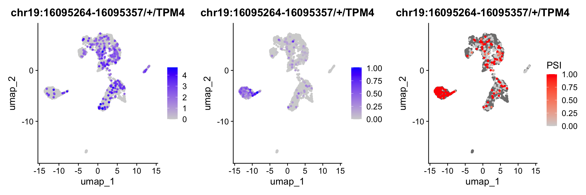
TrackPlot(bamfile = "Parent_SC3v3_Human_Glioblastoma_possorted_genome_bam.bam", gtf = gtf, gene = "TPM4", cell.group = Idents(obj), highlights = c(16095264,16095357), junc = TRUE, max.depth = 1)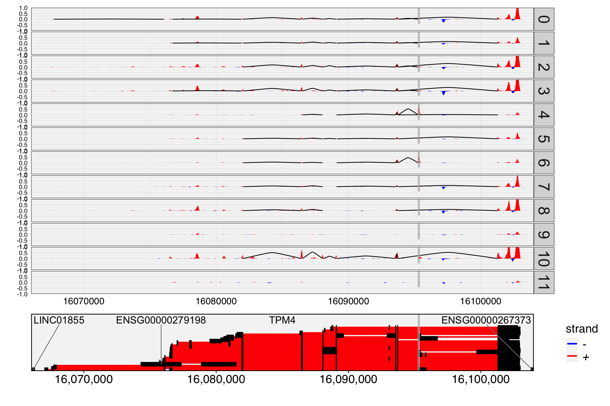
In previous sections, we noted that exon or junction expression is part of gene expression, and inverse expression patterns can strongly indicate alternative splicing. However, exon-skipped reads are largely independent of exon expression, making them more sensitive for detecting alternative splicing and allowing for the prioritization of many events.
Because our spatial dissimilarity test does not account for the spatial dependency of the binding feature, numerous events may be prioritized, especially when the binding feature is sparsely expressed. While some of these events may be true, others might arise due to low coverage. To enhance detection power and reduce potential false positives, intersecting the prioritized exons with the prioritized exon-excluded features can help refine the results.
Mode 3 can be used as an alternative to mode 1 to specifically detect events with strong inverse expression patterns. In mode 3, the exon reads and exon-excluded reads are summed as the binding assay, allowing for a more targeted analysis of such patterns. It is important to note that events detected with mode 3 are always detectable with mode 1, making mode 3 a refined approach for prioritizing inverse expression events.
DefaultAssay(obj) <- "exclude"
obj <- RunSDT(obj, bind.name = "exon_name", bind.assay = "exon", mode = 3, prefix = "mode3")
DefaultAssay(obj) <- "exon"
obj <- RunSDT(obj, bind.name = "exon_name", bind.assay = "exclude", mode = 3, prefix = "mode3")
FbtPlot(obj, val = "mode3.padj", remove.chr = TRUE, assay = c("exclude", "exon"), shape.by = "assay", col.by = "assay", pt.size = 2, cols=c("yellow", "green"))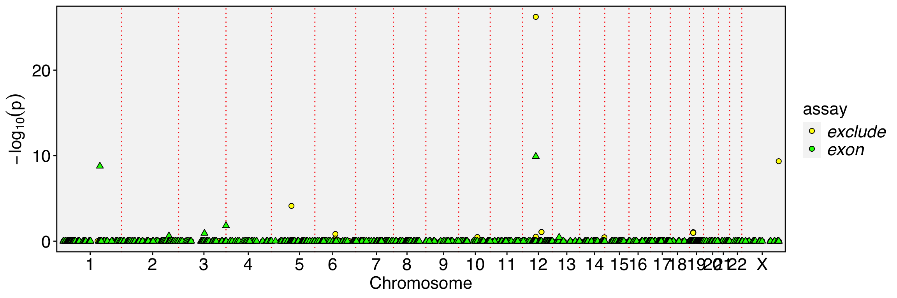
In this case study, we performed a spatial dissimilarity test between various feature pairs. This method provides an overview of the entire cell population and does not rely on prior cell clustering and annotation, making it a powerful tool for analyzing cell data without any prior knowledge. It is recommended to test different features including junctions and exons, and set up different with their corresponding genes in 3’ or 5’ biased scRNA-seq. Additionally, testing between exon-included and exon-skipped reads have more power to detect exon excluded events.
To obtain cell-cluster-specific expression patterns, applying heatmaps and clustering in subsequent analyses is recommended.
If you have any questions regarding this vignette and the usage of Yano, please feel free to report them through the discussion forum. When submitting your query, please ensure you attach the commands you used for better clarity and support.
Command(obj) [1] "NormalizeData.RNA" "FindVariableFeatures.RNA"
[3] "RunPCA.RNA" "FindNeighbors.RNA.pca"
[5] "FindClusters" "RunUMAP.RNA.pca"
[7] "ParseExonName.exon" "NormalizeData.exon"
[9] "RunAutoCorr.exon.pca" "SetAutoCorrFeatures.exon"
[11] "NormalizeData.junction" "RunAutoCorr.junction.pca"
[13] "SetAutoCorrFeatures.junction" "ParseExonName.junction"
[15] "RunSDT.junction" "ScaleData.RNA"
[17] "ScaleData.exon" "NormalizeData.exclude"
[19] "RunAutoCorr.exclude.pca" "SetAutoCorrFeatures.exclude"
[21] "ParseExonName.exclude" "RunSDT.exclude"
[23] "RunSDT.exon" sessionInfo()R version 4.5.2 (2025-10-31)
Platform: x86_64-pc-linux-gnu
Running under: Ubuntu 22.04.5 LTS
Matrix products: default
BLAS: /usr/lib/x86_64-linux-gnu/openblas-pthread/libblas.so.3
LAPACK: /usr/lib/x86_64-linux-gnu/openblas-pthread/libopenblasp-r0.3.20.so; LAPACK version 3.10.0
locale:
[1] LC_CTYPE=C.UTF-8 LC_NUMERIC=C LC_TIME=C.UTF-8
[4] LC_COLLATE=C.UTF-8 LC_MONETARY=C.UTF-8 LC_MESSAGES=C.UTF-8
[7] LC_PAPER=C.UTF-8 LC_NAME=C LC_ADDRESS=C
[10] LC_TELEPHONE=C LC_MEASUREMENT=C.UTF-8 LC_IDENTIFICATION=C
time zone: Etc/UTC
tzcode source: system (glibc)
attached base packages:
[1] grid stats graphics grDevices utils datasets methods
[8] base
other attached packages:
[1] ComplexHeatmap_2.25.2 RColorBrewer_1.1-3 future_1.67.0
[4] dplyr_1.1.4 Seurat_5.3.0 SeuratObject_5.2.0
[7] sp_2.2-0 ggplot2_4.0.0 Yano_1.2
loaded via a namespace (and not attached):
[1] shape_1.4.6.1 jsonlite_2.0.0 magrittr_2.0.4
[4] magick_2.9.0 spatstat.utils_3.2-0 farver_2.1.2
[7] rmarkdown_2.30 GlobalOptions_0.1.3 vctrs_0.6.5
[10] ROCR_1.0-11 spatstat.explore_3.5-3 htmltools_0.5.8.1
[13] sctransform_0.4.2 parallelly_1.45.1 KernSmooth_2.23-26
[16] htmlwidgets_1.6.4 ica_1.0-3 plyr_1.8.9
[19] plotly_4.11.0 zoo_1.8-14 igraph_2.2.0
[22] mime_0.13 lifecycle_1.0.4 iterators_1.0.14
[25] pkgconfig_2.0.3 Matrix_1.7-4 R6_2.6.1
[28] fastmap_1.2.0 clue_0.3-66 fitdistrplus_1.2-4
[31] shiny_1.11.1 digest_0.6.37 colorspace_2.1-2
[34] S4Vectors_0.46.0 patchwork_1.3.2 tensor_1.5.1
[37] RSpectra_0.16-2 irlba_2.3.5.1 labeling_0.4.3
[40] progressr_0.17.0 spatstat.sparse_3.1-0 httr_1.4.7
[43] polyclip_1.10-7 abind_1.4-8 compiler_4.5.2
[46] withr_3.0.2 doParallel_1.0.17 S7_0.2.0
[49] viridis_0.6.5 fastDummies_1.7.5 R.utils_2.13.0
[52] MASS_7.3-65 rjson_0.2.23 gtools_3.9.5
[55] tools_4.5.2 lmtest_0.9-40 httpuv_1.6.16
[58] future.apply_1.20.0 goftest_1.2-3 R.oo_1.27.1
[61] glue_1.8.0 nlme_3.1-168 promises_1.3.3
[64] Rtsne_0.17 cluster_2.1.8.1 reshape2_1.4.4
[67] generics_0.1.4 gtable_0.3.6 spatstat.data_3.1-9
[70] R.methodsS3_1.8.2 tidyr_1.3.1 data.table_1.17.8
[73] BiocGenerics_0.54.1 spatstat.geom_3.6-0 RcppAnnoy_0.0.22
[76] ggrepel_0.9.6 RANN_2.6.2 foreach_1.5.2
[79] pillar_1.11.1 stringr_1.5.2 spam_2.11-1
[82] RcppHNSW_0.6.0 later_1.4.4 circlize_0.4.17
[85] splines_4.5.2 lattice_0.22-5 survival_3.8-3
[88] deldir_2.0-4 tidyselect_1.2.1 miniUI_0.1.2
[91] pbapply_1.7-4 knitr_1.50 gridExtra_2.3
[94] IRanges_2.42.0 scattermore_1.2 stats4_4.5.2
[97] xfun_0.53 matrixStats_1.5.0 stringi_1.8.7
[100] lazyeval_0.2.2 yaml_2.3.10 evaluate_1.0.5
[103] codetools_0.2-19 tibble_3.3.0 cli_3.6.5
[106] uwot_0.2.3 xtable_1.8-4 reticulate_1.43.0
[109] Rcpp_1.1.0 globals_0.18.0 spatstat.random_3.4-2
[112] png_0.1-8 spatstat.univar_3.1-4 parallel_4.5.2
[115] dotCall64_1.2 listenv_0.9.1 viridisLite_0.4.2
[118] scales_1.4.0 ggridges_0.5.7 purrr_1.1.0
[121] crayon_1.5.3 GetoptLong_1.1.0 rlang_1.1.6
[124] cowplot_1.2.0